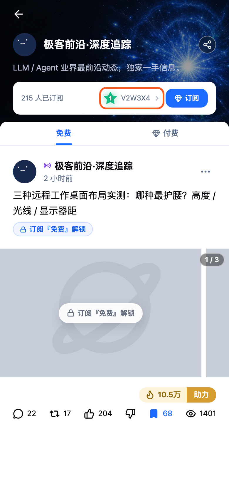
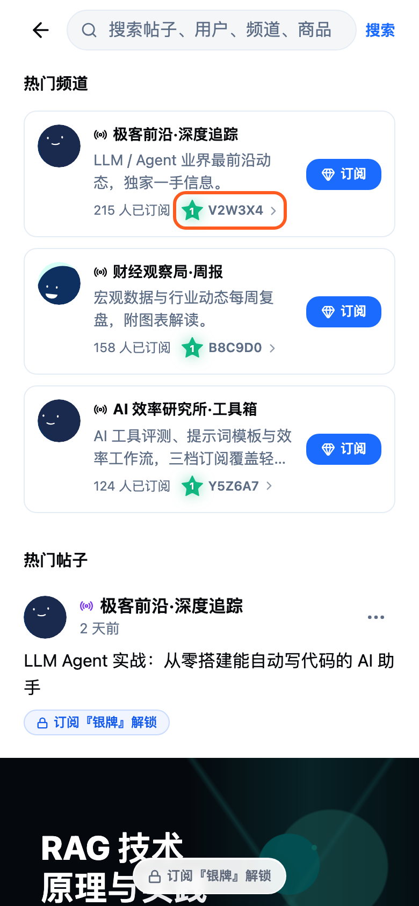
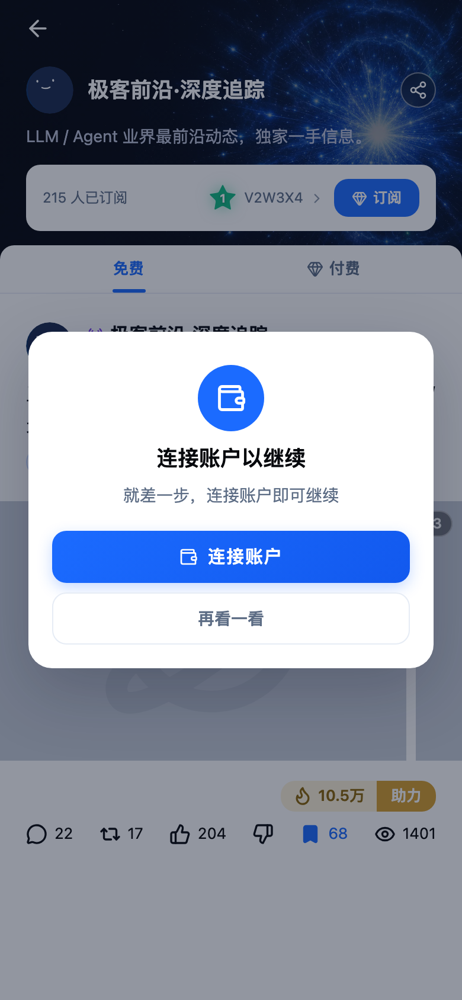
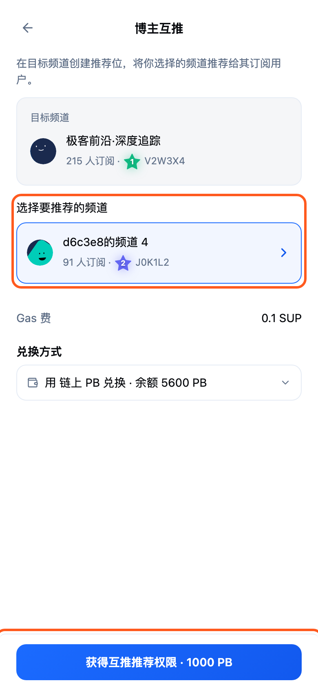
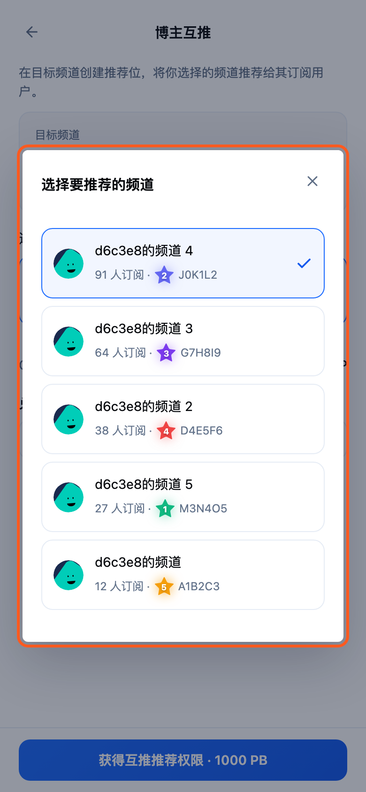
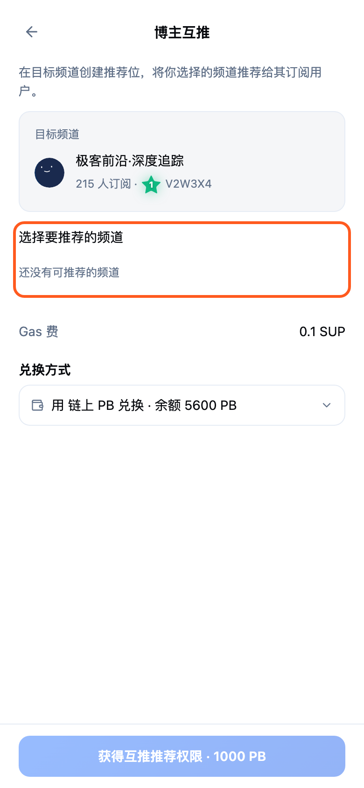
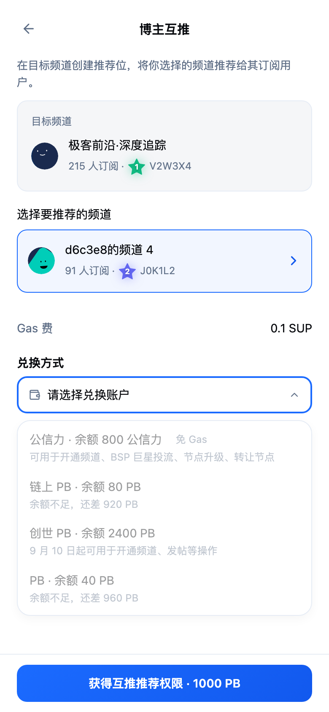
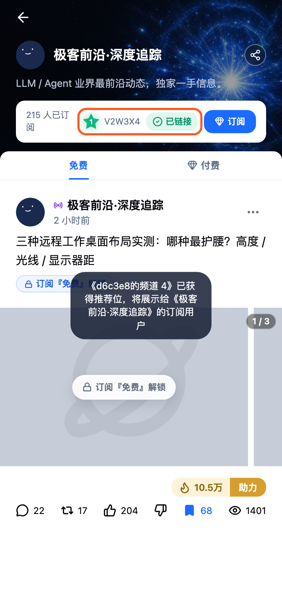

知识宇宙 · 功能交付
博主互推
博主通过其他频道的节点码，花费 1000 PB 在该频道创建推荐位，把自己选定的一个频道推荐给该频道的订阅用户。本页按原型实际状态逐屏说明入口、选择频道、兑换结果及各类边界状态。
- 实现范围
- 当前工作树（选频道面板与吸底按钮尚未提交）
- 日期
- 2026-09-22
- 涉及页面
- 信息广场首页 · 频道主页 · 搜索 · 博主互推
- 原型边界
- 本地 Mock 交互；兑换、推荐位记录与推荐分发待后端实现

屏 1
入口一：他人频道主页的节点码新增
- 信息广场首页
- 点击频道帖子的频道名
- 频道主页
- 频道信息栏右侧展示该频道的节点星级与节点码，带右箭头，点击进入博主互推
- 已对该频道完成互推后，节点码变为不可点，并在旁边显示「已链接」

屏 2
入口二：搜索页频道卡的节点码新增
- 信息广场首页
- 搜索
- 热门频道 / 频道搜索结果
- 搜索页「热门频道」与频道搜索结果的频道卡，在订阅数旁展示节点星级与节点码，点击进入博主互推
- 他人主页的频道目录中，频道卡同样展示可点击的节点码
- 已互推的频道卡节点码后显示勾选标记，不可再次点击

屏 3
未连接账户：先连接账户新增
- 游客状态
- 频道主页
- 点击节点码
- 未连接账户时点击节点码，弹出「连接账户以继续」，连接后才能进入博主互推；「再看一看」关闭弹窗

屏 4
博主互推：目标频道与推荐频道新增
- 频道节点码
- 博主互推
- 顶部说明：在目标频道创建推荐位，将你选择的频道推荐给其订阅用户
- 「目标频道」卡片展示目标频道头像、名称、订阅数、节点星级与节点码
- 「选择要推荐的频道」展示当前选中的己方频道，点击进入选择面板
- Gas 费与兑换方式（选择兑换账户）
- 「获得互推推荐权限 · 1000 PB」按钮固定在页面底部，内容再多也不随之滚走
开发注意
- 兑换金额固定 1000 PB，另收 Gas 费 0.1 SUP
- 可用兑换账户：链上 PB、创世 PB、PB，按各账户开放规则与余额判断；公信力不可用于此操作
- 默认选中订阅数最高的己方频道

屏 5
选择要推荐的频道新增
- 博主互推
- 点击选中频道卡
- 居中弹出选择面板，列出全部己方频道：头像、名称、订阅数、节点星级与节点码
- 当前选中项以蓝色描边和勾选标记表示
- 列表按订阅数从高到低排序
- 己方频道超过 5 个时，顶部出现搜索框，可按频道名称或简介搜索；无结果显示「没有找到匹配的频道」
- 列表每批显示 50 个，底部「加载更多（剩余 N）」继续追加
- 点选频道后面板关闭并回到博主互推，选中卡随之更新；点面板外或关闭按钮保留原选择
开发注意
- 博主频道数量可达上百个，列表需分批返回，搜索建议走服务端
- 演示账号只有 5 个频道，截图中不出现搜索框与加载更多

屏 6
没有己方频道新增
- 未创建频道
- 频道节点码
- 博主互推
- 没有己方频道时显示「还没有可推荐的频道」，兑换按钮置灰不可点

屏 7
兑换账户余额不足新增
- 博主互推
- 兑换方式
- 展开兑换方式，逐个账户显示余额；余额不足的账户标注「余额不足，还差 N PB」，未开放或不适用的账户标注原因并置灰
- 没有可用账户时不自动选中，显示「请选择兑换账户」
开发注意
- 兑换时若余额不足或账户不适用，停留在当前页并提示「所选钱包余额不足或不适用于此操作」

屏 8
兑换完成：频道显示已链接新增
- 博主互推
- 获得互推推荐权限
- 点击「获得互推推荐权限 · 1000 PB」直接完成兑换，无确认页与成功页，立即回到频道主页
- 提示「《你的频道》已获得推荐位，将展示给《目标频道》的订阅用户」
- 目标频道的节点码变为不可点，旁边显示「已链接」；搜索页频道卡同步显示已链接
开发注意
- 扣减 PB、扣减 Gas 费与创建推荐位记录应在同一事务完成，接口需幂等
- 同一用户对同一目标频道只能互推一次，再次点击提示「已链接，无需重复操作」
- 推荐位需记录目标频道、被推荐频道与发起人，用于向目标频道订阅用户展示推荐